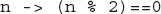

Chapter 14
Lambda Expressions and Method References
Key Skills & Concepts
 Know the general form of a lambda expression
Know the general form of a lambda expression Understand the definition of a functional interface
Use expression lambdas
Use block lambdas
Use generic functional interfaces
Understand variable capture in a lambda expression
Throw an exception from a lambda expression
Understand the method reference
Understand the constructor reference
Know about the predefined functional interfaces in java.util.function
With the release of JDK 8, a new feature has been added to Java that profoundly enhances the expressive power of the language. This feature is the lambda expression. Not only do lambda expressions add new syntax elements to the language, they also streamline the way that certain common constructs are implemented. In much the same way that the addition of generics reshaped Java years ago, lambda expressions are reshaping Java today. They truly are that important.
The addition of lambda expressions have also provided the catalyst for other new Java features. You have already seen one of them—the default method—which was described in Chapter 8. It lets you define default behavior for an interface method. Another example is the method reference, described later in this chapter, which lets you refer to a method without executing it. Furthermore, the inclusion of lambda expressions resulted in new capabilities being incorporated into the API library.
Beyond the benefits that lambda expressions bring to the language, there is another reason why they constitute such an important addition to Java. Over the past few years, lambda expressions have become a major focus of computer language design. For example, they have been added to languages such as C# and C++. Their inclusion in Java helps it remain the vibrant, innovative language that programmers have come to expect. This chapter presents an introduction to this exciting new feature.
Introducing Lambda Expressions
Key to understanding the lambda expression are two constructs. The first is the lambda expression, itself. The second is the functional interface. Let’s begin with a simple definition of each.
A lambda expression is, essentially, an anonymous (that is, unnamed) method. However, this method is not executed on its own. Instead, it is used to implement a method defined by a functional interface. Thus, a lambda expression results in a form of anonymous class. Lambda expressions are also commonly referred to as closures.
A functional interface is an interface that contains one and only one abstract method. Normally, this method specifies the intended purpose of the interface. Thus, a functional interface typically represents a single action. For example, the standard interface Runnable is a functional interface because it defines only one method: run( ). Therefore, run( ) defines the action of Runnable. Furthermore, a functional interface defines the target type of a lambda expression. Here is a key point: a lambda expression can be used only in a context in which a target type is specified. One other thing: a functional interface is sometimes referred to as a SAM type, where SAM stands for Single Abstract Method.
Let’s now look more closely at both lambda expressions and functional interfaces.
NOTE
A functional interface may specify any public method defined by Object, such as equals( ), without affecting its “functional interface” status. The public Object methods are considered implicit members of a functional interface because they are automatically implemented by an instance of a functional interface.
Lambda Expression Fundamentals
The lambda expression introduces a new syntax element and operator into the Java language. The new operator, sometimes referred to as the lambda operator or the arrow operator, is –>. It divides a lambda expression into two parts. The left side specifies any parameters required by the lambda expression. On the right side is the lambda body, which specifies the actions of the lambda expression. Java defines two types of lambda bodies. One type consists of a single expression, and the other type consists of a block of code. We will begin with lambdas that define a single expression.
At this point, it will be helpful to look at a few examples of lambda expressions before continuing. Let’s begin with what is probably the simplest type of lambda expression you can write. It evaluates to a constant value and is shown here:
This lambda expression takes no parameters, thus the parameter list is empty. It returns the constant value 98.6. The return type is inferred to be double. Therefore, it is similar to the following method:
Of course, the method defined by a lambda expression does not have a name.
A slightly more interesting lambda expression is shown here:
This lambda expression obtains a pseudo-random value from Math.random( ), multiplies it by 100, and returns the result. It, too, does not require a parameter.
When a lambda expression requires a parameter, it is specified in the parameter list on the left side of the lambda operator. Here is a simple example:
This lambda expression returns the reciprocal of the value of parameter n. Thus, if n is 4.0, the reciprocal is 0.25. Although it is possible to explicitly specify the type of a parameter, such as n in this case, often you won’t need to because, in many cases, its type can be inferred. Like a named method, a lambda expression can specify as many parameters as needed.
Any valid type can be used as the return type of a lambda expression. For example, this lambda expression returns true if the value of parameter n is even and false otherwise.
Thus, the return type of this lambda expression is boolean.
One other point before moving on. When a lambda expression has only one parameter, it is not necessary to surround the parameter name with parentheses when it is specified on the left side of the lambda operator. For example, this is also a valid way to write the lambda expression just shown:

For consistency, this book will surround all lambda expression parameter lists with parentheses, even those containing only one parameter. Of course, you are free to adopt a different style.
Functional Interfaces
As stated, a functional interface is an interface that specifies only one abstract method. Before continuing, recall from Chapter 8 that not all interface methods are abstract. Beginning with JDK 8, it is possible for an interface to have one or more default methods. Default methods are not abstract. Neither are static interface methods. Thus, an interface method is abstract only if it is does not specify an implementation. This means that a functional interface can include default and/or static methods, but in all cases it must have one and only one abstract method. Because non-default, non-static interface methods are implicitly abstract, there is no need to use the abstract modifier (although you can specify it, if you like).
Here is an example of a functional interface:
In this case, the method getValue( ) is implicitly abstract, and it is the only method defined by MyValue. Thus, MyValue is a functional interface, and its function is defined by getValue( ).
As mentioned earlier, a lambda expression is not executed on its own. Rather, it forms the implementation of the abstract method defined by the functional interface that specifies its target type. As a result, a lambda expression can be specified only in a context in which a target type is defined. One of these contexts is created when a lambda expression is assigned to a functional interface reference. Other target type contexts include variable initialization, return statements, and method arguments, to name a few.
Let’s work through a simple example. First, a reference to the functional interface MyValue is declared:
Next, a lambda expression is assigned to that interface reference:
This lambda expression is compatible with getValue( ) because, like getValue( ), it has no parameters and returns a double result. In general, the type of the abstract method defined by the functional interface and the type of the lambda expression must be compatible. If they aren’t, a compile-time error will result.
As you can probably guess, the two steps just shown can be combined into a single statement, if desired:
Here, myVal is initialized with the lambda expression.
When a lambda expression occurs in a target type context, an instance of a class is automatically created that implements the functional interface, with the lambda expression defining the behavior of the abstract method declared by the functional interface. When that method is called through the target, the lambda expression is executed. Thus, a lambda expression gives us a way to transform a code segment into an object.
In the preceding example, the lambda expression becomes the implementation for the getValue( ) method. As a result, the following displays the value 98.6:
Because the lambda expression assigned to myVal returns the value 98.6, that is the value obtained when getValue( ) is called.
If the lambda expression takes one or more parameters, then the abstract method in the functional interface must also take the same number of parameters. For example, here is a functional interface called MyParamValue, which lets you pass a value to getValue( ):
You can use this interface to implement the reciprocal lambda shown in the previous section. For example:
You can then use myPval like this:
Here, getValue( ) is implemented by the lambda expression referred to by myPval, which returns the reciprocal of the argument. In this case, 4.0 is passed to getValue( ), which returns 0.25.
There is something else of interest in the preceding example. Notice that the type of n is not specified. Rather, its type is inferred from the context. In this case, its type is inferred from the parameter type of getValue( ) as defined by the MyParamValue interface, which is double. It is also possible to explicitly specify the type of a parameter in a lambda expression. For example, this is also a valid way to write the preceding:
Here, n is explicitly specified as double. Usually it is not necessary to explicitly specify the type.
Before moving on, it is important to emphasize a key point: For a lambda expression to be used in a target type context, the type of the abstract method and the type of the lambda expression must be compatible. For example, if the abstract method specifies two int parameters, then the lambda must specify two parameters whose type either is explicitly int or can be implicitly inferred as int by the context. In general, the type and number of the lambda expression’s parameters must be compatible with the method’s parameters and its return type.
Lambda Expressions in Action
With the preceding discussion in mind, let’s look at some simple examples that put the basic lambda expression concepts into action. The first example assembles the pieces shown in the foregoing section into a complete program that you can run and experiment with.
Sample output from the program is shown here:
As mentioned, the lambda expression must be compatible with the abstract method that it is intended to implement. For this reason, the commented-out lines at the end of the preceding program are illegal. The first, because a value of type String is not compatible with double, which is the return type required by getValue( ). The second, because getValue(int) in MyParamValue requires a parameter, and one is not provided.
A key aspect of a functional interface is that it can be used with any lambda expression that is compatible with it. For example, consider the following program. It defines a functional interface called NumericTest that declares the abstract method test( ). This method has two int parameters and returns a boolean result. Its purpose is to determine if the two arguments passed to test( ) satisfy some condition. It returns the result of the test. In main( ), three different tests are created through the use of lambda expressions. One tests if the first argument can be evenly divided by the second; the second determines if the first argument is less than the second; and the third returns true if the absolute values of the arguments are equal. Notice that the lambda expressions that implement these tests have two parameters and return a boolean result. This is, of course, necessary since test( ) has two parameters and returns a boolean result.
The output is shown here:
As the program illustrates, because all three lambda expressions are compatible with test( ), all can be executed through a NumericTest reference. In fact, there is no need to use three separate NumericTest reference variables because the same one could have been used for all three tests. For example, you could create the variable myTest and then use it to refer to each test, in turn, as shown here:
Of course, using different reference variables called isFactor, lessThan, and absEqual, as the original program does, makes it very clear to which lambda expression each variable refers.
There is one other point of interest in the preceding program. Notice how the two parameters are specified for the lambda expressions. For example, here is the one that determines if one number is a factor of another:
Notice that n and d are separated by commas. In general, whenever more than one parameter is required, the parameters are specified, separated by commas, in a parenthesized list on the left side of the lambda operator.
Although the preceding examples used primitive values as the parameter types and return type of the abstract method defined by a functional interface, there is no restriction in this regard. For example, the following program declares a functional interface called StringTest. It has a method called test( ) that takes two String parameters and returns a boolean result. Thus, it can be used to test some condition related to strings. Here, a lambda expression is created that determines if one string is contained within another:
The output is shown here:
Notice that the lambda expression uses the indexOf( ) method defined by the String class to determine if one string is part of another. This works because the parameters a and b are determined by type inference to be of type String. Thus, it is permissible to call a String method on a.
Ask the Expert
Q: Earlier you mentioned that I can explicitly declare the type of a parameter in a lambda expression if needed. In cases in which a lambda expression requires two or more parameters, must I specify the types of all parameters, or can I let one or more use type inference?
A: In cases in which you need to explicitly declare the type of a parameter, then all of the parameters in the list must have declared types. For example, this is legal:
But this is not legal:
Nor is this legal:
Block Lambda Expressions
The body of the lambdas shown in the preceding examples consist of a single expression. These types of lambda bodies are referred to as expression bodies, and lambdas that have expression bodies are sometimes called expression lambdas. In an expression body, the code on the right side of the lambda operator must consist of a single expression, which becomes the lambda’s value. Although expression lambdas are quite useful, sometimes the situation will require more than a single expression. To handle such cases, Java supports a second type of lambda expression in which the code on the right side of the lambda operator consists of a block of code that can contain more than one statement. This type of lambda body is called a block body. Lambdas that have block bodies are sometimes referred to as block lambdas.
A block lambda expands the types of operations that can be handled within a lambda expression because it allows the body of the lambda to contain multiple statements. For example, in a block lambda you can declare variables, use loops, specify if and switch statements, create nested blocks, and so on. A block lambda is easy to create. Simply enclose the body within braces as you would any other block of statements.
Aside from allowing multiple statements, block lambdas are used much like the expression lambdas just discussed. One key difference, however, is that you must explicitly use a return statement to return a value. This is necessary because a block lambda body does not represent a single expression.
Here is an example that uses a block lambda to find the smallest positive factor of an int value. It uses an interface called NumericFunc that has a method called func( ), which takes one int argument and returns an int result. Thus, NumericFunc supports a numeric function on values of type int.
The output is shown here:
In the program, notice that the block lambda declares a variable called result, uses a for loop, and has a return statement. These are legal inside a block lambda body. In essence, the block body of a lambda is similar to a method body. One other point. When a return statement occurs within a lambda expression, it simply causes a return from the lambda. It does not cause an enclosing method to return.
Generic Functional Interfaces
A lambda expression, itself, cannot specify type parameters. Thus, a lambda expression cannot be generic. (Of course, because of type inference, all lambda expressions exhibit some “generic-like” qualities.) However, the functional interface associated with a lambda expression can be generic. In this case, the target type of the lambda expression is determined, in part, by the type argument or arguments specified when a functional interface reference is declared.
To understand the value of generic functional interfaces, consider this. Earlier in this chapter, two different functional interfaces were created, one called NumericTest and the other called StringTest. They were used to determine if two values satisfied some condition. To do this, both defined a method called test( ) that took two parameters and returned a boolean result. In the case of NumericTest, the values being tested were integers. For StringTest, the values were of type String. Thus, the only difference between the two methods was the type of data they operated on. Such a situation is perfect for generics. Instead of having two functional interfaces whose methods differ only in their data types, it is possible to declare one generic interface that can be used to handle both circumstances. The following program shows this approach:
The output is shown here:
In the program, the generic functional interface SomeTest is declared as shown here:
Here, T specifies the type of both parameters for test( ). This means that it is compatible with any lambda expression that takes two parameters of the same type and returns a boolean result.
The SomeTest interface is used to provide a reference to three different types of lambdas. The first uses type Integer, the second uses type Double, and the third uses type String. Thus, the same functional interface can be used to refer to the isFactor, isFactorD, and isIn lambdas. Only the type argument passed to SomeTest differs.
As a point of interest, the NumericFunc interface shown in the previous section can also be rewritten as a generic interface. This is an exercise in “Chapter 14 Self Test,” at the end of this chapter.
| Try This 14-1 |
Pass a Lambda Expression as an Argument |
A lambda expression can be used in any context that provides a target type. The target contexts used by the preceding examples are assignment and initialization. Another one is when a lambda expression is passed as an argument. In fact, passing a lambda expression as an argument is a common use of lambdas. Moreover, it is a very powerful use because it gives you a way to pass executable code as an argument to a method. This greatly enhances the expressive power of Java.
To illustrate the process, this project creates three string functions that perform the following operations: reverse a string, reverse the case of letters within a string, and replace spaces with hyphens. These functions are implemented as lambda expressions of the functional interface StringFunc. They are then passed as the first argument to a method called changeStr( ). This method applies the string function to the string passed as the second argument to changeStr( ) and returns the result. Thus, changeStr( ) can be used to apply a variety of different string functions.
1. Create a file called LambdaArgumentDemo.java.
2. To the file, add the functional interface StringFunc, as shown here:
This interface defines the method func( ), which takes a String argument and returns a String. Thus, func( ) can act on a string and return the result.
3. Begin the LambdaArgumentDemo class, as shown here, by defining the changeStr( ) method:
As the comment indicates, changeStr( ) has two parameters. The type of the first is StringFunc. This means it can be passed a reference to any StringFunc instance. Thus, it can be passed a reference to an instance created by a lambda expression that is compatible with StringFunc. The string to be acted on is passed to s. The resulting string is returned.
4. Begin the main( ) method, as shown here:
Here, inStr refers to the string that will be acted on, and outStr will receive the modified string.
5. Define a lambda expression that reverses the characters in a string and assign it to a StringFunc reference. Notice that this is another example of a block lambda.
6. Call changeStr( ), passing in the reverse lambda and inStr. Assign the result to outStr, and display the result.
Because the first parameter to changeStr( ) is of type StringFunc, the reverse lambda can be passed to it. Recall that a lambda expression causes an instance of its target type to be created, which in this case is StringFunc. Thus, a lambda expression gives you a way to effectively pass a code sequence to a method.
7. Finish the program by adding lambdas that replace spaces with hyphens and invert the case of the letters, as shown next. Notice that both of these lambdas are embedded in the call to changeStr( ), itself, rather than using a separate StringFunc variable.
As you can see by looking at this code, embedding the lambda that replaces spaces with hyphens in the call to changeStr( ) is both convenient and easy to understand. This is because it is a short, expression lambda that simply calls replace( ) to replace spaces with hyphens. The replace( ) method is another method defined by the String class. The version used here takes as arguments the character to be replaced and its replacement. It returns a modified string.
For the sake of illustration, the lambda that inverts the case of the letters in a string is also embedded in the call to changeStr( ). However, in this case, rather unwieldy code is produced that is somewhat hard to follow. Usually, it is better to assign such a lambda to a separate reference variable (as was done for the string-reversing lambda), and then pass that variable to the method. Of course, it is technically correct to pass a block lambda as an argument, as the example shows.
One other point: notice that the invert-case lambda uses the static methods isUpperCase( ), toUpperCase( ), and toLowerCase( ) defined by Character. Recall that Character is a wrapper class for char. The isUpperCase( ) method returns true if its argument is an uppercase letter and false otherwise. The toUpperCase( ) and toLowerCase( ) perform the indicated action and return the result. In addition to these methods, Character defines several others that manipulate or test characters. You will want to explore them on your own.
8. Here is all the code assembled into a complete program.
The following output is produced:
Ask the Expert
Q: In addition to variable initialization, assignment, and argument passing, what other places constitute a target type context for a lambda expression?
A: Casts, the ? operator, array initializers, return statements, and lambda expressions, themselves, can also serve as target type contexts.
Lambda Expressions and Variable Capture
Variables defined by the enclosing scope of a lambda expression are accessible within the lambda expression. For example, a lambda expression can use an instance variable or static variable defined by its enclosing class. A lambda expression also has access to this (both explicitly and implicitly), which refers to the invoking instance of the lambda expression’s enclosing class. Thus, a lambda expression can obtain or set the value of an instance variable or static variable and call a method defined by its enclosing class.
However, when a lambda expression uses a local variable from its enclosing scope, a special situation is created that is referred to as a variable capture. In this case, a lambda expression may only use local variables that are effectively final. An effectively final variable is one whose value does not change after it is first assigned. There is no need to explicitly declare such a variable as final, although doing so would not be an error. (The this parameter of an enclosing scope is automatically effectively final, and lambda expressions do not have a this of their own.)
It is important to understand that a local variable of the enclosing scope cannot be modified by the lambda expression. Doing so would remove its effectively final status, thus rendering it illegal for capture.
The following program illustrates the difference between effectively final and mutable local variables:
As the comments indicate, num is effectively final and can, therefore, be used inside myLambda. This is why the println( ) statement outputs the number 18. When func( ) is called with the argument 8, the value of v inside the lambda is set by adding num (which is 10) to the value passed to n (which is 8). Thus, func( ) returns 18. This works because num is not modified after it is initialized. However, if num were to be modified, either inside the lambda or outside of it, num would lose its effectively final status. This would cause an error, and the program would not compile.
It is important to emphasize that a lambda expression can use and modify an instance variable from its invoking class. It just can’t use a local variable of its enclosing scope unless that variable is effectively final.
Throw an Exception from Within a Lambda Expression
A lambda expression can throw an exception. If it throws a checked exception, however, then that exception must be compatible with the exception(s) listed in the throws clause of the abstract method in the functional interface. For example, if a lambda expression throws an IOException, then the abstract method in the functional interface must list IOException in a throws clause. This situation is demonstrated by the following program:
Because a call to read( ) could result in an IOException, the ioAction( ) method of the functional interface MyIOAction must include IOException in a throws clause. Without it, the program will not compile because the lambda expression will no longer be compatible with ioAction( ). To prove this, simply remove the throws clause and try compiling the program. As you will see, an error will result.
Ask the Expert
Q: Can a lambda expression use a parameter that is an array?
A: Yes. However, when the type of the parameter is inferred, the parameter to the lambda expression is not specified using the normal array syntax. Rather, the parameter is specified as a simple name, such as n, not as n[ ]. Remember, the type of a lambda expression parameter will be inferred from the target context. Thus, if the target context requires an array, then the parameter’s type will automatically be inferred as an array. To better understand this, let’s work through a short example.
Here is a generic functional interface called MyTransform, which can be used to apply some transform to the elements of an array:
Notice that the parameter to the transform( ) method is an array of type T. Now, consider the following lambda expression that uses MyTransform to convert the elements of an array of Double values into their square roots:
Here, the type of a in transform( ) is Double[ ], because Double is specified as the type parameter for MyTransform when sqrts is declared. Therefore, the type of v in the lambda expression is inferred as Double[ ]. It is not necessary (or legal) to specify it as v[ ].
One last point: It is legal to declare the lambda parameter as Double[ ] v, because doing so explicitly declares the type of the parameter. However, doing so gains nothing in this case.
Method References
There is an important feature related to lambda expressions called the method reference. A method reference provides a way to refer to a method without executing it. It relates to lambda expressions because it, too, requires a target type context that consists of a compatible functional interface. When evaluated, a method reference also creates an instance of a functional interface. There are different types of method references. We will begin with method references to static methods.
Method References to static Methods
A method reference to a static method is created by specifying the method name preceded by its class name, using this general syntax:
ClassName::methodName
Notice that the class name is separated from the method name by a double colon. The :: is a new separator that has been added to Java by JDK 8 expressly for this purpose. This method reference can be used anywhere in which it is compatible with its target type.
The following program demonstrates the static method reference. It does so by first declaring a functional interface called IntPredicate that has a method called test( ). This method has an int parameter and returns a boolean result. Thus, it can be used to test an integer value against some condition. The program then creates a class called MyIntPredicates, which defines three static methods, with each one checking if a value satisfies some condition. The methods are called isPrime( ), isEven( ), and isPositive( ), and each method performs the test indicated by its name. Inside MethodRefDemo, a method called numTest( ) is created that has as its first parameter, a reference to IntPredicate. Its second parameter specifies the integer being tested. Inside main( ), three different tests are performed by calling numTest( ), passing in a method reference to the test to perform.
The output is shown here:
In the program, pay special attention to this line:
Here, a reference to the static method isPrime( ) is passed as the first argument to numTest( ). This works because isPrime is compatible with the IntPredicate functional interface. Thus, the expression MyIntPredicates::isPrime evaluates to a reference to an object in which isPrime( ) provides the implementation of test( ) in IntPredicate. The other two calls to numTest( ) work in the same way.
Method References to Instance Methods
A reference to an instance method on a specific object is create by this basic syntax:
objRef::methodName
As you can see, the syntax is similar to that used for a static method, except that an object reference is used instead of a class name. Thus, the method referred to by the method reference operates relative to objRef. The following program illustrates this point. It uses the same IntPredicate interface and test( ) method as the previous program. However, it creates a class called MyIntNum, which stores an int value and defines the method isFactor( ), which determines if the value passed is a factor of the value stored by the MyIntNum instance. The main( ) method then creates two MyIntNum instances. It then calls numTest( ), passing in a method reference to the isFactor( ) method and the value to be checked. In each case, the method reference operates relative to the specific object.
This program produces the following output:
In the program, pay special attention to the line:
Here, the method reference assigned to ip refers to an instance method isFactor( ) on myNum. Thus, when test( ) is called through that reference, as shown here:
the method will call isFactor( ) on myNum, which is the object specified when the method reference was created. The same situation occurs with the method reference myNum2::isFactor, except that isFactor( ) will be called on myNum2. This is confirmed by the output.
It is also possible to handle a situation in which you want to specify an instance method that can be used with any object of a given class—not just a specified object. In this case, you will create a method reference as shown here:
ClassName::instanceMethodName
Here, the name of the class is used instead of a specific object, even though an instance method is specified. With this form, the first parameter of the functional interface matches the invoking object and the second parameter matches the parameter (if any) specified by the method. Here is an example. It reworks the previous example. First, it replaces IntPredicate with the interface MyIntNumPredicate. In this case, the first parameter to test( ) is of type MyIntNum. It will be used to receive the object being operated upon. This allows the program to create a method reference to the instance method isFactor( ) that can be used with any MyIntNum object.
Ask the Expert
Q: How do I specify a method reference to a generic method?
A: Often, because of type inference, you won’t need to explicitly specify a type argument to a generic method when obtaining its method reference, but Java does include a syntax to handle those cases in which you do. For example, assuming the following:
the following statement is valid:
Here, the type argument for the generic method myGenMeth is explicitly specified. Notice that the type argument occurs after the ::. This syntax can be generalized: When a generic method is specified as a method reference, its type argument comes after the :: and before the method name. In cases in which a generic class is specified, the type argument follows the class name and precedes the ::.
The output is shown here:
In the program, pay special attention to this line:
It creates a method reference to the instance method isFactor( ) that will work with any object of type MyIntNum. For example, when test( ) is called through the inp, as shown here:
it results in a call to myNum.isFactor(3). In other words, myNum becomes the object on which isFactor(3) is called.
Constructor References
Similar to the way that you can create references to methods, you can also create references to constructors. Here is the general form of the syntax that you will use:
classname::new
This reference can be assigned to any functional interface reference that defines a method compatible with the constructor. Here is a simple example:
The output is shown here:
In the program, notice that the func( ) method of MyFunc returns a reference of type MyClass and has a String parameter. Next, notice that MyClass defines two constructors. The first specifies a parameter of type String. The second is the default, parameterless constructor. Now, examine the following line:
Here, the expression MyClass::new creates a constructor reference to a MyClass constructor. In this case, because MyFunc’s func( ) method takes a String parameter, the constructor being referred to is MyClass(String s) because it is the one that matches. Also notice that the reference to this constructor is assigned to a MyFunc reference called myClassCons. After this statement executes, myClassCons can be used to create an instance of MyClass, as this line shows:
In essence, myClassCons has become another way to call MyClass(String s).
If you wanted MyClass::new to use MyClass’s default constructor, then you would need to use a functional interface that defines a method that has no parameter. For example, if you define MyFunc2, as shown here:
then the following line will assign to MyClassCons a reference to MyClass’s default (i.e., parameterless) constructor:
In general, the constructor that will be used when ::new is specified is the one whose parameters match those specified by the functional interface.
Ask the Expert
Q: Can I declare a constructor reference that creates an array?
A: Yes. To create a constructor reference for an array, use this construct:
type[]::new
Here, type specifies the type of object being created. For example, assuming the form of MyClass shown in the preceding example and given the MyClassArrayCreator interface shown here:
the following creates an array of MyClass objects and gives each element an initial value:
Here, the call to func(3) causes a three-element array to be created. This example can be generalized. Any functional interface that will be used to create an array must contain a method that takes a single int parameter and returns a reference to the array of the specified size.
As a point of interest, you can create a generic functional interface that can be used with other types of classes, as shown here:
For example, you could create an array of five Thread objects like this:
One last point: In the case of creating a constructor reference for a generic class, you can specify the type parameter in the normal way, after the class name. For example, if MyGenClass is declared like this:
then the following creates a constructor reference with a type argument of Integer:
Because of type inference, you won’t always need to specify the type argument, but you can when necessary.
Predefined Functional Interfaces
Up to this point, the examples in this chapter have defined their own functional interfaces so that the fundamental concepts behind lambda expressions and functional interfaces could be clearly illustrated. In many cases, however, you won’t need to define your own functional interface because JDK 8 adds a new package called java.util.function that provides several predefined ones. Here is a sampling:
| Interface |
Purpose |
| UnaryOperator<T> |
Apply a unary operation to an object of type T and return the result, which is also of type T. Its method is called apply( ). |
| BinaryOperator<T> |
Apply an operation to two objects of type T and return the result, which is also of type T. Its method is called apply( ). |
| Consumer<T> |
Apply an operation on an object of type T. Its method is called accept( ). |
| Supplier<T> |
Return an object of type T. Its method is called get( ). |
| Function<T, R> |
Apply an operation to an object of type T and return the result as an object of type R. Its method is called apply( ). |
| Predicate<T> |
Determine if an object of type T fulfills some constraint. Returns a boolean value that indicates the outcome. Its method is called test( ). |
The following program shows the Predicate interface in action. It uses Predicate as the functional interface for a lambda expression the determines if a number is even. Predicate’s abstract method is called test( ), and it is shown here:
boolean test(T val)
It must return true if val satisfies some constraint or condition. As it is used here, it will return true if val is even.
Ask the Expert
Q: At the start of this chapter, you mentioned that the inclusion of lambda expressions resulted in new capabilities being incorporated into the API library. Can you give me an example?
Q: One of the most important enhancements to the Java API library added by JDK 8 is the new stream package java.util.stream. This package defines several stream classes, the most general of which is Stream. As it relates to java.util.stream, a stream is a conduit for data. Thus, a stream represents a sequence of objects. Furthermore, a stream supports many types of operations that let you create a pipeline that performs a series of actions on the data. Often, these actions are represented by lambda expressions. For example, using the stream API, you can construct sequences of actions that resemble, in concept, the type of database queries for which you might use SQL. Furthermore, in many cases, such actions can be performed in parallel, thus providing a high level of efficiency, especially when large data sets are involved. Put simply, the stream API provides a powerful means of handling data in an efficient, yet easy to use way. One last point: although the streams supported by the new stream API have some similarities with the I/O streams described in Chapter 10, they are not the same.

The program produces the following output:
 Chapter 14 Self Test
Chapter 14 Self Test
1. What is the lambda operator?
2. What is a functional interface?
3. How do functional interfaces and lambda expressions relate?
4. What are the two general types of lambda expressions?
5. Show a lambda expression that returns true if a number is between 10 and 20, inclusive.
6. Create a functional interface that can support the lambda expression you created in question 5. Call the interface MyTest and its abstract method testing( ).
7. Create a block lambda that computes the factorial of an integer value. Demonstrate its use. Use NumericFunc, shown in this chapter, for the functional interface.
8. Create a generic functional interface called MyFunc<T>. Call its abstract method func( ). Have func( ) return a reference of type T. Have it take a parameter of type T. (Thus, MyFunc will be a generic version of NumericFunc shown in the chapter.) Demonstrate its use by rewriting your answer to question 7 so it uses MyFunc<T> rather than NumericFunc.
9. Using the program shown in Try This 14-1, create a lambda expression that removes all spaces from a string and returns the result. Demonstrate this method by passing it to changeStr( ).
10. Can a lambda expression use a local variable? If so, what constraint must be met?
11. If a lambda expression throws a checked exception, the abstract method in the functional interface must have a throws clause that includes that exception. True or False?
12. What is a method reference?
13. When evaluated, a method reference creates an instance of the ____________ ___________ supplied by its target context.
14. Given a class called MyClass that contains a static method called myStaticMethod( ), show how to specify a method reference to myStaticMethod( ).
15. Given a class called MyClass that contains an instance method called myInstMethod( ) and assuming an object of MyClass called mcObj, show how to create a method reference to myInstMethod( ) on mcObj.
16. To the MethodRefDemo2 program, add a new method to MyIntNum called hasCommonFactor( ). Have it return true if its int argument and the value stored in the invoking MyIntNum object have at least one factor in common. For example, 9 and 12 have a common factor, which is 3, but 9 and 16 have no common factor. Demonstrate hasCommonFactor( ) via a method reference.
17. How is a constructor reference specified?
18. Java defines several predefined functional interfaces in what package?